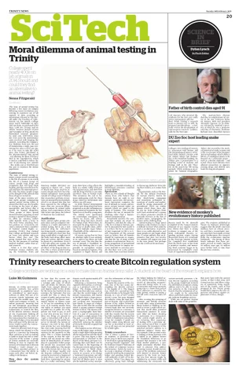
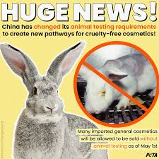
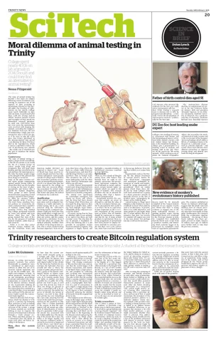
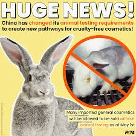

According to the sites on the internet: Recent developments in the battle against animal testing show important successes as well as continued obstacles. In a positive development, the UK Labour Party has promised to gradually stop animal testing if they win, planning to work with scientists and industry to develop a plan for ending the practice. Animal rights organizations have praised this dedication and are encouraging other political parties to follow suit. There have also been significant developments in the United States. The U.S. Department of Veterans Affairs has stopped contentious cat experiments due to public and legislative pressure. Furthermore, lawmakers are calling for transparency and accountability in the use of taxpayer funds for animal testing practices at the Pentagon. These actions demonstrate an increasing worldwide trend towards research practices that are more ethical and compassionate, although there is still a lot of work ahead. Activists are still striving for stricter regulations and the use of non-animal testing methods, which have been proven to be more efficient in numerous instances.
There have been several recent developments in animal testing, with growing efforts to phase it out. In the UK, Lord Patrick Vallance, a former Chief Scientific Officer, has been tasked with creating a roadmap to end animal testing across multiple government departments. This move is part of the Labour Party’s commitment to fulfilling promises made in its election manifesto. Although animal testing statistics have shown a slight decline (3% drop in 2023), there are concerns about the continued use of painful tests, even when alternatives exist. In the U.S., some institutions have also made progress. For instance, the University of California-Davis halted controversial kitten experiments following public outcry, and over a dozen cats were rescued and rehomed. At the same time, international efforts are underway to promote non-animal testing methods, particularly in industries like cosmetics. The International Collaboration on Cosmetics Safety (ICCS) is pushing for the adoption of innovative testing methods that do not involve animals. These steps reflect a global trend toward reducing reliance on animal testing, though challenges and opposition remain.
 (this is the fisrt picture on the homepage)


(this is the fisrt picture on the homepage)


.jpeg)